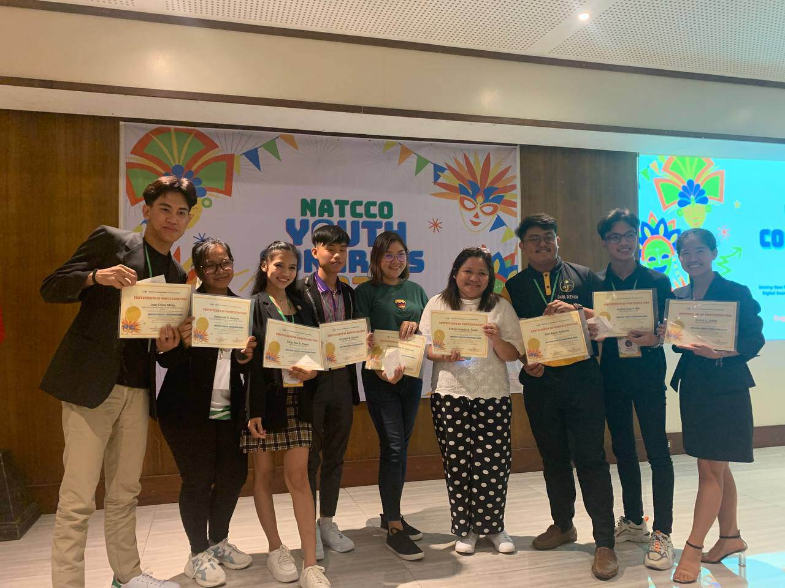
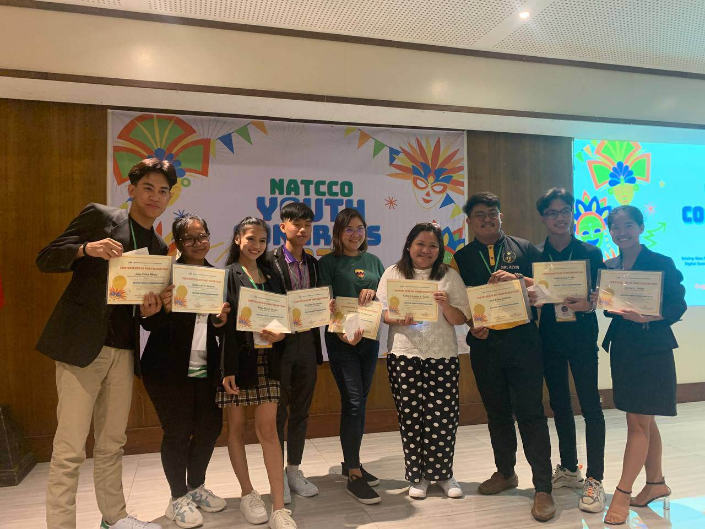

|
By Angel L. Genato IV || Date Posted May 8, 2023
 

The Nueva Vizcaya State University partook in the National Confederation of Cooperatives (NATCCO) Youth Congress at the Sugarland Hotel in Bacolod City from May 2 to 4, 2023. The NVSU student delegation of nine (9) student leaders from the Supreme Student Council-Bayombong Campus (SSC-Bay), College of Business Education Student Council (CBE-SC), Junior Financial Executives (JFINEX)-NVSU, Philippine Junior Marketing Association (PJMA)-NVSU were among the 108 participants, including 34 youth-led cooperatives.
During the Congress, Mr. Jean Chloe Miray, a Bachelor of Science in Business Administration, majoring in Marketing third-year student, won the Quiz bee Coop-youth Masterminds Ace Category.
The Congress also served as an opportunity for students to share their knowledge and ideas about cooperatives with fellow participants.
The NVSU student delegation is expected to bring back valuable insights to the University towards the development of economic enterprise development by as mandated by the Commission on Higher Education.
Ms. Katrine Angela Tucay, Economic Enterprise Development Unit Head of the Student Affairs & Services-Bayombong Campus and SSC-Bay Adviser, and Ms. Cherrie Prelle de Guzman, CBE-SC Adviser, chaperoned the NVSU student delegation to the Congress.
 |
Nueva Vizcaya State University College of Business Education |
Pages |
|
Web Developers
This website is made for academic purposes only. |